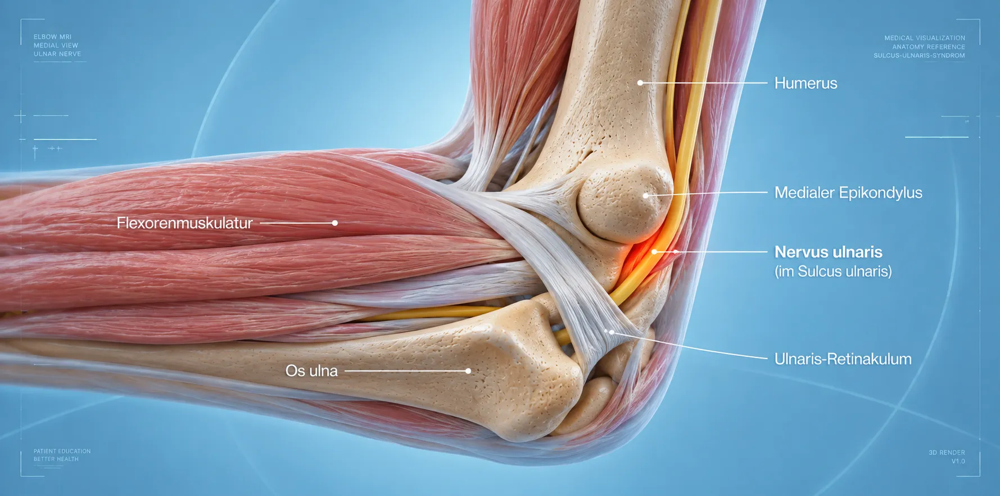

Наши Специализации
Диагностика и лечение заболеваний центральной и периферической нервной системы.
Важное медицинское примечание
Пожалуйста, обратите внимание: точный диагноз и показания всегда определяются индивидуально врачом после тщательного обследования. Мы не можем гарантировать конкретный результат лечения.
Позвоночник
Заболевания позвоночника
Die Wirbelsäule schützt Rückenmark und Nerven und ermöglicht gleichzeitig Stabilität und Bewegung. Verschleiß, Bandscheibenveränderungen, Verengungen oder Нестабильность позвоночника können Schmerzen und neurologische Beschwerden verursachen.
Wir untersuchen Erkrankungen der Halswirbelsäule (HWS), Brustwirbelsäule (BWS) und Lendenwirbelsäule (LWS). Entscheidend ist, ob die anatomische Veränderung tatsächlich zu den Beschwerden passt.
Межпозвоночная грыжа (ШОП/ПОП)
Vorwölbung oder Austritt von Bandscheibengewebe, das Nervenwurzeln oder das Rückenmark reizt. Betroffen sein kann die Hals- oder Lendenwirbelsäule.
.png)
Стеноз спинного канала
Verengung des Wirbelkanals, die Druck auf das Rückenmark oder Nerven ausübt. Typisch sind Schmerzen beim Gehen, die sich beim Sitzen bessern.

Фасеточные суставы
Arthrose und Zysten der kleinen Wirbelgelenke. Verursacht lokale Rücken- oder Nackenschmerzen, die sich bei Bewegung verstärken können.

Halswirbelsäule & Bandscheibenprothese
Veränderungen an der HWS können Nervenwurzeln und das Rückenmark beeinträchtigen. Je nach Befund: Dekompression, Fusion oder bewegungserhaltender Bandscheibenersatz.

Синдром КПС
Reizung oder Funktionsstörung des Iliosakralgelenks. Typisch sind Schmerzen im unteren Rücken und Beckenbereich, die ins Gesäß oder den Oberschenkel ausstrahlen können.
.webp)
Переломы позвонков & Опухолевые поражения
Bruch eines Wirbelkörpers nach Sturz, bei Osteoporose oder durch Tumorbefall. Kyphoplastie oder interdisziplinäre Therapie je nach Ursache und Stabilität.

Стеноз межпозвоночных отверстий
Verengung der Austrittsstellen von Nervenwurzeln am Wirbel. Kann ausstrahlende Schmerzen, Kribbeln oder Kraftminderung in Arm oder Bein verursachen.
Спондилолистез
Verschiebung eines Wirbelkörpers gegenüber dem benachbarten Wirbel. Je nach Ausmaß können Rückenschmerzen und neurologische Beschwerden auftreten.
Нестабильность позвоночника
Pathologische Beweglichkeit zwischen Wirbelkörpern, die Schmerzen und neurologische Beschwerden verursachen kann. Behandlung je nach Ausmaß konservativ oder operativ.
Периферические нервы
Заболевания нервов за пределами головного и спинного мозга
Periphere Nerven können an anatomisch engen Stellen unter Druck geraten. Typische Beschwerden sind Kribbeln, Taubheit, Schmerzen und – bei stärkerer oder länger bestehender Schädigung – Kraftverlust.
Синдром запястного канала
Kompression des Nervus medianus am Handgelenk. Verursacht Kribbeln, Taubheit und Schwäche in Daumen, Zeige- und Mittelfinger – häufig nachts stärker.

Синдром кубитального канала
Kompression des Ulnarisnervs am Ellenbogen. Kribbeln und Taubheit im kleinen Finger und Ringfinger, Schmerzen am Ellenbogen – bei längerem Verlauf Kraftverlust in der Hand.

Синдромы сдавления нерва
Weitere Engpasssyndrome an anatomischen Engstellen des Körpers. Kompression von Nerven mit Kribbeln, Taubheit, Schmerzen und – bei längerer Schädigung – Kraftminderung.

Синдром тарзального канала
Kompression des Nervus tibialis im Tarsalkanal am Innenknöchel. Typisch: Kribbeln, Taubheitsgefühl und Schmerzen an der Fußsohle und im Bereich der Zehen.
Повреждения нервов
Traumatische oder operative Schäden peripherer Nerven. Je nach Ausmaß: konservative Behandlung, Nervennaht oder Nerventransplantation zur Wiederherstellung der Funktion.
Полинейропатии
Erkrankungen vieler peripherer Nerven gleichzeitig, häufig bei Diabetes oder anderen Grunderkrankungen. Symptome: Kribbeln, Taubheit, Schwäche – oft beginnend an den Füßen.
Болевые синдромы
Хронические и острые болевые состояния
Chronische Schmerzen können unterschiedliche Ursachen haben. Deshalb ist häufig ein abgestuftes Behandlungskonzept sinnvoll.
Хроническая боль в спине/шее
Anhaltende Schmerzen, die über mehrere Monate bestehen bleiben. Erfordern ein individuelles, multimodales Behandlungskonzept.

Нейромодуляция
Innovative Verfahren der minimalinvasiven Schmerztherapie durch gezielte elektrische Stimulation von Nervenbahnen, um chronische Schmerzen nachhaltig zu lindern.

Нейропатическая боль
Schmerzen, die durch eine Schädigung oder Fehlfunktion des Nervensystems entstehen. Typisch: brennende, einschießende oder elektrischartige Beschwerden.
Послеоперационные болевые синдромы
Anhaltende Schmerzen nach operativen Eingriffen, z. B. Failed-Back-Surgery-Syndrom. Erfordern eine interdisziplinäre Ursachenklärung und ein individuell abgestimmtes Therapiekonzept.
Фантомные боли
Schmerzwahrnehmung in einem amputierten oder nicht mehr innervieren Körperteil. Multimodale Therapieansätze helfen, die Schmerzverarbeitung im Nervensystem zu beeinflussen.
Психосоматические факторы
Chronische Schmerzen gehen häufig mit psychischen Begleiterkrankungen einher. Eine ganzheitliche Betrachtung unter Einbeziehung psychosomatischer Aspekte verbessert die Therapieergebnisse.